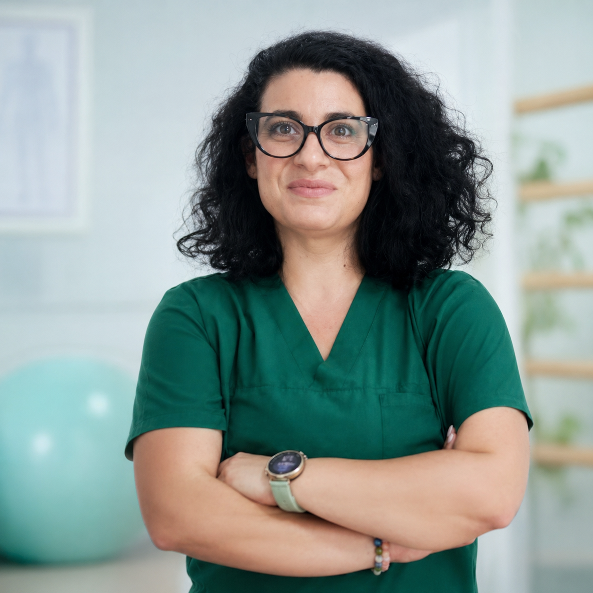
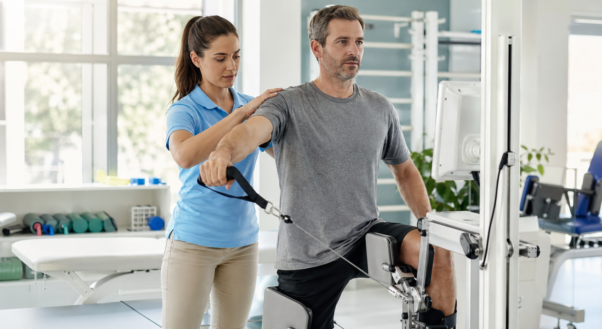
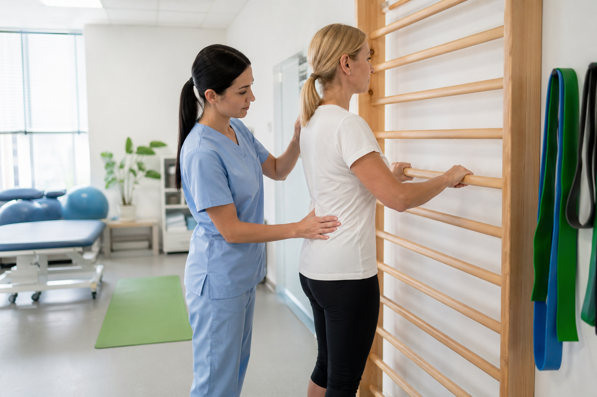

Кога е добре да започне рехабилитация след операция?
Това зависи от вида операция и указанията на лекуващия лекар, но в много случаи ранното и правилно дозирано раздвижване е важно за добрия резултат и по-бързото връщане към функция.
Рехабилитация, кинезитерапия и възстановяване
В Physio Center Pernik работим с индивидуален подход при болки в кръста, дископатия, следоперативно възстановяване, спортни травми, неврологична рехабилитация и изправителна гимнастика по метода ШРОТ за деца и възрастни.
За центъра
Ако търсите рехабилитация Перник с индивидуален подход и ясно обяснен план, тук ще намерите спокойна среда, професионално отношение и последователна работа. В центъра се работи както с пациенти след операция, травма и инсулт, така и с хора с по-дългогодишни оплаквания като болки в кръста, дископатия, шипове и ограничение в движението. Целта ни е да намалим болката, да подобрим функцията и да върнем увереността в ежедневните дейности.
Когато става дума за кинезитерапия Перник, най-важното е упражненията да бъдат правилно подбрани и дозирани. Затова при нас всяка програма започва с оценка на стойката, движението, натоварването и навиците в ежедневието. Не работим по универсален модел, а според реалното състояние на човека. Така пациентът разбира какво правим, защо го правим и какво може да очаква като напредък.
Специалист

Цветелина Драгомирова
Цветелина Драгомирова е рехабилитатор и кинезитерапевт, завършил Националната спортна академия. Тя има над две десетилетия практика в рехабилитацията, физиотерапията, лечебния масаж и ШРОТ терапията.
Ако търсите рехабилитатор Перник, който работи внимателно и с ясно обяснен процес, тук ще намерите точно такава комбинация от опит, търпение и медицински фокус.
Как работим
При много хора болката и ограничението в движението са натрупвани с месеци, а понякога и с години. Затова и възстановяването трябва да бъде подредено правилно. В нашата практика физиотерапия Перник не означава просто апаратна процедура, а част от по-широка стратегия. Когато е необходимо, включваме BTL терапия, фонофореза и ултразвук, но винаги ги съчетаваме с активна работа, контролирано раздвижване и индивидуални упражнения.
Същото важи и за лечебен масаж Перник. Масажът може да бъде много полезен при напрежение, скованост, болки в гръб, врат и крайници, но най-добри резултати идват, когато той е част от по-цялостен възстановителен план. Така не разчитаме само на краткотрайно облекчение, а работим и върху причината за проблема, върху стойката, движението и натоварването в ежедневието.
За нас
Над 20 години практика в рехабилитация, кинезитерапия, физиотерапия и лечебен масаж.
Подходяща среда за следоперативно възстановяване, болки в кръста, ШРОТ терапия и двигателни проблеми.
Отделна страница с повече информация за центъра, Цветелина Драгомирова и терапевтичния подход.
Услуги
Функционално възстановяване, баланс, координация и по-уверено ежедневие след инсулт.
Щадящо раздвижване и плавно връщане към движение след оперативна намеса.
Кинезитерапия и физиотерапия при болка, скованост и ограничение в движение.
Подход при остри и хронични болки в кръста с фокус върху причината и функцията.
Работа за по-добра подвижност, по-малко болка и по-уверено движение.
Възстановяване след навяхвания, претоварване и травми с контролирано връщане към активност.
Лечебен масаж при болки, скованост и нужда от по-добро възстановяване.
Коригираща работа върху стойка, дишане, симетрия и контрол на тялото.
Индивидуални програми при болка, скованост, травма и ограничение в движение.
По-сигурно ходене, раздвижване и функционално възстановяване след операция.
За кого е подходящ центърът
Най-често при нас идват пациенти с болки в кръста, болки във врата, проблеми в раменете, следоперативно ограничение, затруднено ходене, скованост след обездвижване и нужда от контролирано възстановяване след травма. При някои основният проблем е болка, а при други – загуба на сила, баланс, увереност и нормален ритъм на движение. Във всички случаи целта е една и съща: да върнем функцията по възможно най-естествения и безопасен начин.
За родители, които търсят коригираща работа за дете, центърът предлага и изправителна гимнастика по метода ШРОТ. За хора с натрупано мускулно напрежение, заседнал режим или претоварване предлагаме и лечебен масаж, съчетан при нужда с кинезитерапия и физиотерапия. Така сайтът и услугите отразяват реалната работа на центъра: не отделни процедури сами по себе си, а цялостна грижа за възстановяването.
Среда и терапия




За пациента
Какво включва възстановяването и защо движението е важна част от добрия резултат.
Кога помагат, кога трябва да се подбират внимателно и защо няма универсален набор за всеки.
Какво влияе на периода за възстановяване и защо темпото е различно при всеки пациент.
Как се комбинират движение, физиотерапия и щадящо натоварване при скованост и болка.
Какво представляват и защо най-добре работят, когато се комбинират правилно.
Често задавани въпроси
Това зависи от вида операция и указанията на лекуващия лекар, но в много случаи ранното и правилно дозирано раздвижване е важно за добрия резултат и по-бързото връщане към функция.
Да, когато упражненията са подбрани според конкретното състояние и не се използва универсален подход за всички. При нужда програмата се комбинира с физиотерапия и лечебен масаж.
Физиотерапията използва апаратни методи за подпомагане на възстановяването, а кинезитерапията е активната работа чрез движение, упражнения, баланс и функционално възстановяване.
Апаратура и база
Премиум терапевтична маса
Висок клас електрически регулируема маса, подходяща за мануална работа, лечебен масаж, позициониране и раздвижване.
Физиотерапия
Съвременен BTL Premium апарат за прецизна физиотерапевтична подкрепа при болка, възпаление и възстановяване.
Фонофореза и ултразвук
Допълваща физиотерапевтична възможност при болка, възпаление, меки тъкани и възстановяване в комбиниран план.
Зала за активна терапия
Пространство за работа върху стойка, мобилност, баланс, координация и контролирано изпълнение на упражненията.
Локация и упътване
Перник Център, ж.к. Красно село 19Б, 2300 Перник
Работно време:
Понеделник - Петък: 8:00 - 18:00
Събота и Неделя: почивен ден
Контакт
Перник Център, ж.к. Красно село 19Б, 2300 Перник
Понеделник - Петък: 8:00 - 18:00
Събота и Неделя: почивен ден
Свържете се за консултация, оценка и изготвяне на индивидуален план.